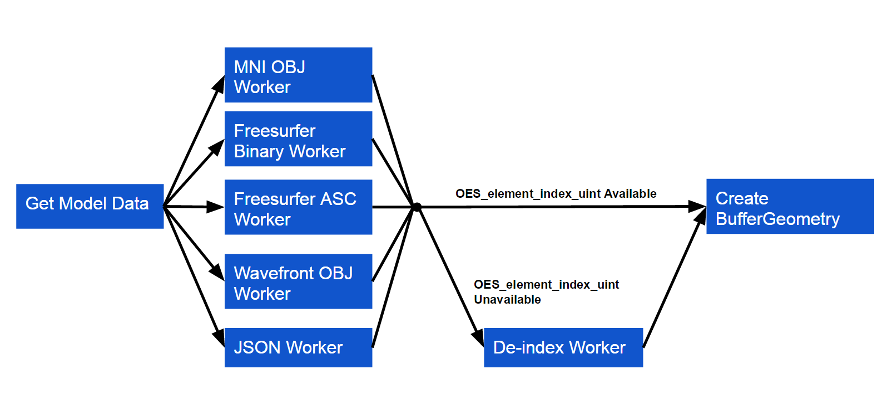

BrainBrowser
WebGL-based Neurological Data Visualization
Tarek Sherif
Outline
- What is BrainBrowser?
- Background
- Architecture
- Further Information
What is BrainBrowser?
BrainBrowser is...
BrainBrowser is...
- Open-source JavaScript library exposing web-based tools for neuroimaging
-
Key technologies:
- HTML5 Canvas 2D
- WebGL
- Web Workers

BrainBrowser is...
-
Volume Viewer
- Explore volumetric data through orthogonal slices
-
Surface Viewer
- Explore surface data in real-time 3D


Volume Viewer
- Display orthogonal 2D slices of a 3D volume
- Uses HTML5 Canvas 2D for image processing and display
- https://brainbrowser.cbrain.mcgill.ca/volume-viewer
Surface Viewer
- Real-time display of 3D surfaces
- Visualize various data maps on loaded surfaces
- WebGL for rendering using the three.js library
- Web Workers used for data parsing
- https://brainbrowser.cbrain.mcgill.ca/surface-viewer
Background
Neuroimaging
Typical Workflow
-
Acquisition
- Volume of voxels representing intensity of the MR signal
- Intensity can represent structural, activation or diffusion patterns
-
Processing
- Extract features of interest (e.g. surfaces, measurements)
-
Visualization
- Explore the data
- Quality control
History
- April, 2010: Developed as an application using Google's O3D browser plugin
- April, 2013: Port of codebase to three.js
- December, 2013: Refactored into a reusable library
- March, 2014: Codebase open-sourced
Architecture
Software Requirements
- Handle large datasets
- Multiple data formats (parse on the fly)
- Load from local file system
- Dynamic loading based on user interaction
-
Colorize per-vertex scalar data
-
And allow users to manipulate that colorization
Code
BrainBrowser.SurfaceViewer.start("visualization-div", function(viewer) {
viewer.render();
viewer.loadColorMapFromURL("models/spectral.txt");
viewer.loadModelFromURL("models/brain.obj", {
format: "mniobj",
complete: function() {
viewer.loadIntensityDataFromURL("models/cortical-thickness.txt");
}
});
});
Pipeline
- Load geometry
- Load per-vertex data
Geometry Pipeline
Geometry Pipeline
-
Load geometry
- List of vertices, normals, indices, colors
- Loaded over the network or from the local file system
Geometry Pipeline
-
Parse geometry
- One Web Worker script for each supported data format
- Parse external geometry description into internal object model
- Plugin framework
Web Workers
-
Create multiple threads in the browser
- Parrallel processing
- Normally have to do a structured clone to move data between threads
- This can be slow for large data
Transferable Objects
-
ArrayBuffers can be "transferred" between threads
- Reference passed, no copying
- Buffer no longer available in original thread
var worker = new Worker(workerUrl);
var data = new Float32Array(raw);
worker.postMessage(data, data.buffer);
Dealing with Indices
-
Core WebGL 1.0 spec limits indices to 16 bits
- Maximum of 65,536 vertices
-
Neurological surface geometry can be much bigger
- DTI demo model contains 560,674 vertices
OES_element_index_uint
- WebGL extension that allows 32-bit indices
-
Widely available
- WebGL Stats reports 96% support
- Will become core in WebGL 2.0
gl.getExtension("OES_element_index_uint");
Two Options
- If OES_element_index_uint is available, use it
- If not, "de-index" the model in a Web Worker
Per-vertex Data Pipeline

Per-vertex Data Pipeline
-
Load color map
- Array of colors
- Used to colorize scalar data
- Loaded over the network or from the local file system
Per-vertex Data Pipeline
-
Load per-vertex data
- List of per-vertex scalar values
- Loaded over the network or from the local file system
- One Web Worker script per supported format
Per-vertex Data Pipeline
-
Map colors
- Interpolate per-vertex scalars into color array
- Apply colors to vertices
Further Information
- BrainBrowser website
- GitHub repo
- Publication in Frontiers in Neuroinformatics
- Chapter in upcoming book, WebGL Insights